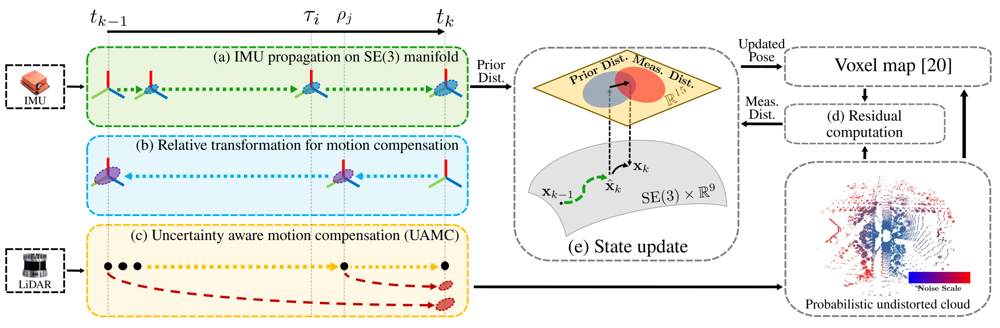
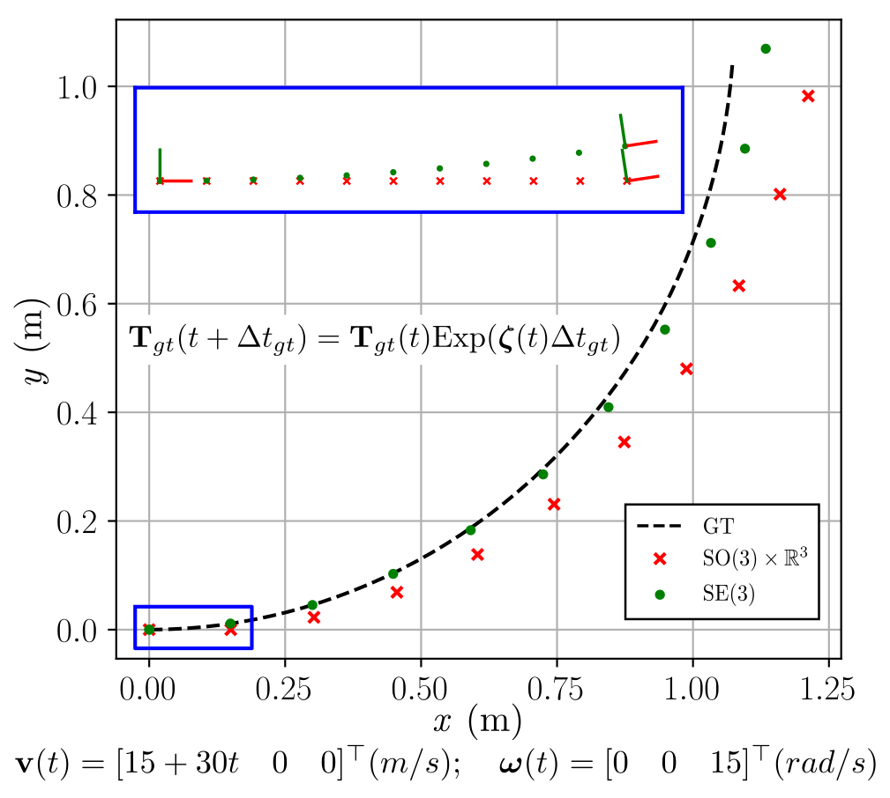
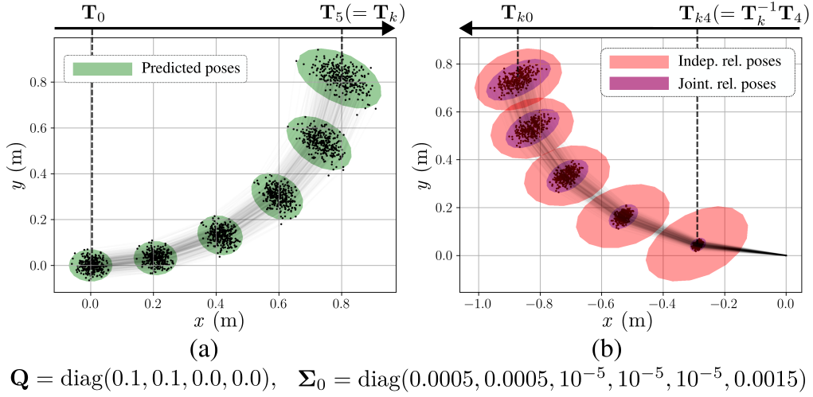

In estimating odometry accurately, an inertial measurement unit (IMU) is widely used owing to its high-rate measurements, which can be utilized to obtain motion information through IMU propagation. In this paper, we address the limitations of existing IMU propagation methods in terms of motion prediction and motion compensation.
In motion prediction, the existing methods typically represent a 6-DoF pose by separating rotation and translation and propagate them on their respective manifold, so that the rotational variation is not effectively incorporated into translation propagation. During motion compensation, the relative transformation between predicted poses is used to compensate motion-induced distortion in other measurements, while inherent errors in the predicted poses introduce uncertainty in the relative transformation.
To tackle these challenges, we represent and propagate the pose on SE(3) manifold, where propagated translation properly accounts for rotational variation. Furthermore, we precisely characterize the relative transformation uncertainty by considering the correlation between predicted poses, and incorporate this uncertainty into the measurement noise during motion compensation. To this end, we propose a LiDAR-inertial odometry (LIO), referred to as SE(3)-LIO, that integrates the proposed IMU propagation and uncertainty-aware motion compensation (UAMC). We validate the effectiveness of SE(3)-LIO on diverse datasets.
SE(3)-LIO consists of two key components: (1) smooth IMU propagation on SE(3) manifold where rotation and translation are jointly propagated, and (2) uncertainty-aware motion compensation (UAMC) that leverages the correlation between predicted poses to characterize the relative transformation uncertainty.

Unlike conventional methods that propagate rotation and translation separately on their respective manifolds, SE(3)-LIO represents the 6-DoF pose on the SE(3) manifold and propagates them jointly. This allows the propagated translation to properly account for rotational variation, yielding more accurate motion prediction.

SE(3)-LIO formally derives the joint distribution of the predicted poses, enabling precise characterization of the relative transformation uncertainty by considering their correlation. This uncertainty is incorporated into the measurement noise during motion compensation to construct a probabilistic undistorted point cloud.

Qualitative comparison on the spms sequence of the NTU-VIRAL dataset, which features aggressive motion with rapid rotations and high accelerations.
Qualitative comparison on the CW sequence of our dataset, collected in large-scale rough terrain with wild fluctuations and degraded measurements due to dense vegetation and extensive open spaces.
@inproceedings{shin2026icra,
author = {Shin, Gunhee and Lee, Seungjae and Kong, Jei and Seo, Youngwoo and Myung, Hyun},
title = {SE(3)-LIO: Smooth IMU Propagation With Jointly Distributed Poses on SE(3) Manifold for Accurate and Robust LiDAR-Inertial Odometry},
booktitle = {Proc. of the IEEE Int. Conf. on Robotics and Automation (ICRA)},
year = {2026},
}